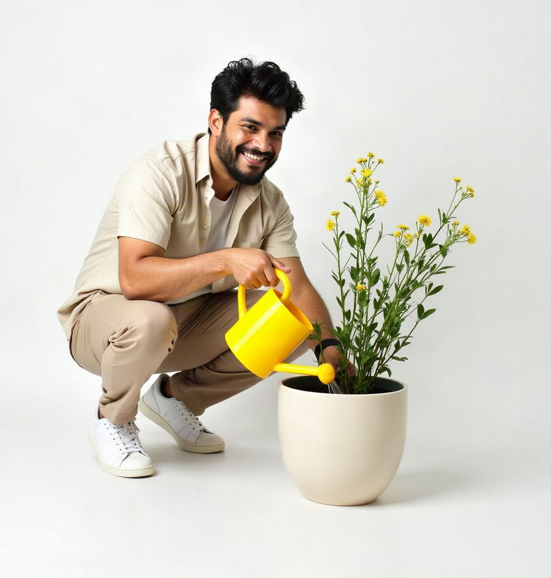

Cada década rinde más que la anterior
Ahorrando S/ 100 al mes al 5% TREA durante 40 años. Tu aporte es el mismo en cada década; los intereses, no.
- Lo que aportas: S/ 12,000 por década
- Intereses ganados en la década
Pibank te lo explica claro
Eso es el interés compuesto. Al comienzo casi no se nota; con los años, hace la mayor parte del trabajo. Te lo explicamos y lo puedes simular con tus propios números.
Si ahorras S/ 100 al mes al 5% TREA durante
tendríasS/ 81,538
Simulación referencial con una TREA de 5% constante. La tasa puede variar. Ver supuestos
Simula con tus números
Lo básico
Es ganar intereses no solo sobre el dinero que depositas, sino también sobre los intereses que ese dinero ya generó. Cada vez que te pagan intereses, se suman a tu saldo y, desde ese momento, empiezan a trabajar contigo.
Depositas tu dinero en una cuenta que paga intereses.
Tu cuenta te paga intereses sobre tu saldo. Cuánto, te lo dice la TREA (Tasa de Rendimiento Efectivo Anual): en la Cuenta Soles Pibank es 5% al año, o sea, S/ 5 por cada S/ 100 que mantienes un año.
Esos intereses pasan a ser parte de tu saldo, así que la próxima vez también ganan intereses. Y así, una y otra vez.
Interés simple
Con S/ 1,000 al 5% TREA, siempre ganas sobre los mismos S/ 1,000: S/ 50.00 cada año, ni más ni menos.
Interés compuesto
Ganas sobre tus S/ 1,000 más los intereses que ya sumaste: S/ 50.00, luego S/ 52.50, luego S/ 55.13… cada año un poco más.
Míralo año por año
Año 0
Depositas S/ 1,000. Todavía no has ganado intereses.
S/ 1,000 × 1.050 = S/ 1,000.00
Con interés compuesto tienes S/ 0.00 más que con interés simple.
Simulador
Cambia los valores y mira el resultado al instante. La parte amarilla del gráfico es lo que hace la diferencia: intereses que generaron tus propios intereses.
En 30 años, con 5% TREA, tendrías
Intereses totales: S/ 0
Pasa el cursor, toca una barra o usa las flechas del teclado para ver cada año.
Simulación referencial: no es una oferta ni garantiza rendimientos. Supone una TREA constante durante todo el plazo, aportes al final de cada mes y sin retiros. No incluye ITF ni impuestos y no descuenta la inflación. Ver supuestos
| Año | Lo que pusiste | Intereses ganados ese año | Intereses de tus intereses (acumulado) | Saldo |
|---|
El factor tiempo
Porque el interés compuesto se acelera con el tiempo: cada año ganas sobre un saldo más grande que el anterior. Los primeros años parecen lentos; los últimos son los que más rinden.
Ahorrando S/ 100 al mes al 5% TREA durante 40 años. Tu aporte es el mismo en cada década; los intereses, no.
Divide 72 entre la tasa y sabrás, más o menos, en cuántos años se duplica tu dinero.
14.4 años
72 ÷ 5 = 14.4 · cálculo exacto: 14.2 años
Lucía y Diego ahorran S/ 200 al mes al 5% TREA hasta los 60 años. La única diferencia es cuándo empiezan.
Lucía empieza a los 25
Pone en total S/ 84,000
A los 60 tendría
S/ 221,693
Diego empieza a los 35
Pone en total S/ 60,000
A los 60 tendría
S/ 117,147
Al 5% TREA, S/ 50 al mes desde hoy te dejarían S/ 40,769 en 30 años. Si esperas 10 años para empezar, necesitarías el doble, S/ 100 al mes, para llegar a S/ 40,580 en la misma fecha, y pondrías S/ 6,000 más.
Ahorra un monto fijo cada mes, apenas recibas tu sueldo. Como una planta que riegas seguido, tu ahorro sigue creciendo.
Si los retiras, dejan de generar intereses. Déjalos en tu cuenta el mayor tiempo posible para que sigan trabajando.
Es la tasa que te permite comparar cuánto rinde una cuenta en un año, porque considera sus comisiones y gastos. A mayor TREA, más rápido crece tu dinero.
Los primeros años el crecimiento parece lento. Es normal: la curva se empina con el tiempo y lo mejor llega al final.
Hablemos claro
Es la Tasa de Rendimiento Efectivo Anual. Sirve para comparar cuánto rinden en un año las cuentas de ahorro y los depósitos, porque además de la tasa de interés considera las comisiones y gastos del producto (no incluye impuestos como el ITF). En las cuentas de ahorro se calcula con un ejemplo estándar: un monto referencial durante un año, sin movimientos adicionales a la apertura. Por eso es la tasa que conviene usar para comparar.
La TEA (Tasa Efectiva Anual) es la tasa de interés que paga la cuenta en términos anuales. La TREA considera además las comisiones y gastos del producto. En la Cuenta Soles Pibank ambas son iguales, 5%, porque la cuenta no tiene comisiones ni gastos obligatorios asociados.
En la Cuenta Soles Pibank los intereses se calculan sobre tu saldo promedio del mes y se abonan el último día de cada mes. Desde ese momento forman parte de tu saldo y también generan intereses. Por eso el simulador los suma mes a mes.
Convierte la TREA en su tasa mensual equivalente, (1 + TREA)1/12 − 1, y la aplica mes a mes sobre tu saldo, con los aportes al final de cada mes y sin retiros. Así, S/ 1,000 al 5% durante 12 meses se convierten en S/ 1,050.00, igual que en el ejemplo de la Cuenta Soles Pibank.
Es una aproximación educativa: en la cuenta real los intereses se calculan sobre tu saldo promedio mensual con la TEA (base de 360 días), así que lo que recibas puede variar según las fechas de tus movimientos. Revisa el detalle en Fórmulas y ejemplos.
Para separar los «intereses por tu dinero» de los «intereses de tus intereses», tomamos como referencia lo que cada depósito ganaría con interés simple: la TREA por el tiempo que lleva en la cuenta (por ejemplo, S/ 100 durante 2 años y medio al 5% ganarían S/ 12.50). Todo lo que ganas por encima de eso son «intereses de tus intereses». Como la TREA es la tasa de un año completo, mientras un depósito tiene menos de un año todo lo que gana cuenta como «intereses por tu dinero»: el efecto compuesto empieza a notarse desde el segundo año.
El principio es el mismo: si reinviertes lo que ganas, tus ganancias también generan ganancias. La diferencia está en el riesgo. En una cuenta de ahorros conoces la TREA vigente y tu depósito está cubierto por el Fondo de Seguro de Depósitos, según su cobertura vigente. En inversiones como fondos mutuos o acciones, el rendimiento no está asegurado y puede ser negativo.
Pierdes el efecto compuesto: los intereses que retiras dejan de generar nuevos intereses; si los retiras todos, tu dinero crece como con interés simple. Puedes disponer de tu dinero cuando lo necesites, pero mientras más tiempo lo dejes, más rinde.
Sí, cuando tienes deudas. Los créditos también cobran intereses con tasas efectivas anuales (para compararlos se usa la TCEA) y, mientras más tiempo tardas en pagarlos, más intereses pagas en total: una deuda cara que arrastras por años puede costarte mucho más de lo que recibiste. Por eso conviene evitar las deudas caras y poner el tiempo a tu favor, ahorrando.
No. Es una simulación referencial con fines educativos: supone que la tasa se mantiene igual durante todo el plazo, y las tasas pueden cambiar. Para conocer las condiciones vigentes, consulta el Tarifario y la Cartilla de Información.
El simulador muestra montos nominales, es decir, soles de cada año futuro. Con la inflación los precios suben y esos soles alcanzan para menos. Por ejemplo, si la inflación promediara 2% al año (el centro del rango meta del BCRP), los S/ 81,538 que tendrías ahorrando S/ 100 al mes durante 30 años equivaldrían a unos S/ 45,000 de hoy. Por eso importa que tu dinero gane intereses: el dinero que no rinde pierde poder de compra.
Sí, hasta un monto máximo. Los depósitos de la Cuenta Soles Pibank están cubiertos por el Fondo de Seguro de Depósitos (FSD) hasta un monto máximo de cobertura que se actualiza cada trimestre; lo que supere ese monto no está cubierto. Consulta las condiciones y el monto vigente en fsd.org.pe.
Desde el primer sol. La Cuenta Soles Pibank no tiene monto mínimo de apertura ni comisión de mantenimiento. Es una cuenta de ahorros 100% digital para personas naturales: si eres mayor de edad y tienes DNI, celular y correo electrónico, la abres en pibank.pe con «Hazte cliente».
Cuenta Soles Pibank
5% TREA
TEA es igual a TREA de 5% para una Cuenta de Ahorros Soles Pibank por un monto de S/ 1,000.00 a 12 meses, considerando que no se realiza ningún movimiento adicional a la apertura de la cuenta, el importe final del período será de S/ 1,050.00. Saldo mínimo de equilibrio para obtener rendimiento: S/ 0.00. No incluye ITF.
Sin monto mínimo de apertura ni comisión de mantenimiento. Cuenta para personas naturales, 100% digital y permite realizar operaciones exclusivamente a través de canales digitales Pibank. No permite operaciones en efectivo, uso de agencias, cajeros automáticos, agentes corresponsales, ni emisión de tarjeta de débito, cheques u otros títulos valores. Transferencias entre cuentas e interbancarias deben realizarse en canales digitales Pibank, sin comisión (aplica ITF de corresponder y comisión por envío físico de estado de cuenta, según tarifario y si cliente lo solicita). Depósito cubierto por el Fondo de Seguro de Depósitos (FSD); para información sobre condiciones y monto máximo de cobertura vigente, sujeto a actualizaciones trimestrales, consulta fsd.org.pe.
Simulación referencial con fines educativos. No constituye una oferta ni garantiza rendimientos futuros. Supuestos: la TREA se mantiene constante durante todo el plazo; los intereses se capitalizan mensualmente con la tasa mensual equivalente a la TREA; los aportes se realizan al final de cada mes y no hay retiros. Las tasas distintas de 5% TREA son hipotéticas, se muestran solo para comparar y no corresponden a productos de Pibank. Montos brutos y nominales: no consideran el ITF ni los impuestos que pudieran aplicar durante el plazo simulado, ni descuentan la inflación. Los casos de Lucía y Diego son ilustrativos.
Para más información sobre términos y condiciones de la cuenta, tasas, comisiones y gastos, consulta nuestro Tarifario y Cartilla de Información en www.pibank.pe o comunícate con nuestra Banca Telefónica al 0-800-71626. Esta información se proporciona de acuerdo con el Reglamento de Gestión de Conducta de Mercado del Sistema Financiero.